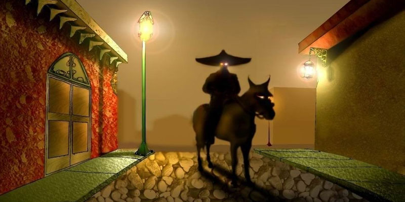

El sombreron
El Sombrerón tiene perfilada en todo el país la misma imagen:
un hombre muy pequeño, vestido de negro, usa botas,
y lo cubre un gran sombrero de alas anchas.
El Sombrerón se enamora de las mujeres de pelo largo y ojos grandes,
les canta canciones acompañadas con su guitarra de plata.
Con la conquista española y al darse el mestizaje con las distintas culturas existentes en Guatemala,
cada región del país aportó lo suyo para poder ofrecer variadas
formas de platos dulces y salados. La Antigua Guatemala jugó un papel
de primer ordenen el nacimiento de una nueva expresión culinaria como es el
dulce tradicional antigüeño; que con el correr de los siglos se ha convertido
en parte de la identidad guatemalteca.
Una noche, El Sombrerón caminaba en un barrio de La Antigua Guatemala
cuando vio a una muchacha muy bella con pelo largo y se enamoró de ella.
Buscó su casa y le dio serenata una y otra noche,
pero ella no le dijo nada a sus padres sobre él.
Un día empezó a dejar de comer hasta el punto de que casi murió,
y fue entonces cuando la madre se dio cuenta que era por El Sombrerón.
Llevó a su hija a un convento creyendo que ahí iba a estar mejor,
pero la niña siguió sin comer y un día despertó con una trenza en su pelo
hecha por el espectro y ese día murió. Luego en el velorio,
apareció El Sombrerón llorando y sus lágrimas eran como cristales.
Jamás olvida a las muchachas que ha amado.
También se cuenta que les hace trenzas a los caballos y mulas…
Se cuenta también que este espanto a parte de enamorar a muchachas jóvenes,
gusta por cabalgar mulas y caballos de los establos de las fincas
en las noches agotándolos. Por ello, las bestias durante el día no cumplen las tareas,
sumado a que se vuelven hostiles con las personas,
los campesinos y finqueros al ver este comportamiento buscan si el
Sombrerón no les ha hecho trenzas en la greñas.
Si es así, el animal ya no sirve para tareas… Una forma de saber si el Sombrerón
está haciendo de las suyas en fincas y casas, es colocar ya sea cerca de un balcón
de casa o cerca de los establos una silla y mesa de pino recién elaboradas,
junto a aguardiente y una guitarra en noche de luna y deben guardar silencio todas
las personas, sólo así se escuchará la guitarra y los cantos del Sombrerón.
Al Sombrerón le atraen las muchachas de pelo largo y ojos grandes,
por ello, cuando se sospecha que está tras una joven se le
debe cortar el pelo a esta para que el Sombrerón no se gane el alma de la joven.
